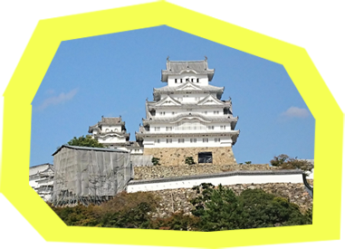
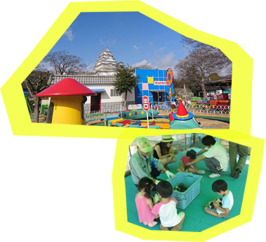
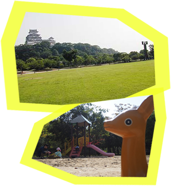

世界文化遺産・国宝「姫路城」

まずは、姫路城周辺を散策。
現存12天守の中でもっとも大きく、遠くからでも白く美しい姿を見ることができます。お城前の広場では、小さなお子様を走り回らせて遊ぶ事も出来ます。
姫路市立動物園

動物園に到着！
展示の他にも、子供も喜ぶ乗り物があって、遊園地気分で楽しめます。1日2回のふれあいタイムでは、動物と直接ふれあえます。芝生広場や休憩所では、お弁当を食べることもできます。
シロトピア記念公園

姫路城北側に位置し、「姫路城十景」のひとつに選ばれています。
四季折々の草花を鑑賞することができる公園で、子供が楽しめる遊具があり、休憩所や綺麗なトイレ、駐車場なども整備されているので安心して訪れることができます。